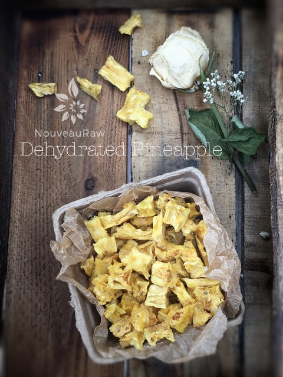
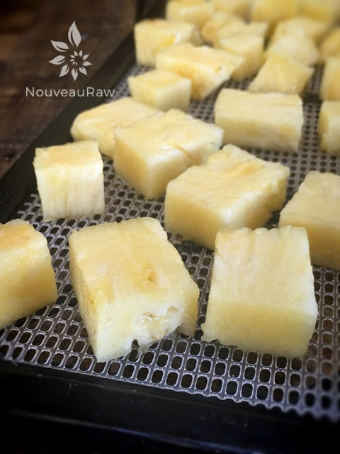

Dehydrated Pineapple

~ raw, dehydrated ~
I love “people watching” while I browse through the produce section. So much can be learned. People, tap, thump, smell, shake and look for certain markings when selecting “that” perfect item. I am not afraid to ask someone what and why they are doing.
Years ago, I was in an Asian store and they had a large bin of pineapples up by the registers. I watched a woman pluck the inner spears out from the top of the pineapple. She had a layer of spears around her feet. I just had to know what she was up to.
So, I snuck up behind her to get a closer look. She would reach her fingers into the top center of the fruit, and tug on the inner spears. If they readily pulled out, the pineapple went in her cart. If they resisted, she moved on to the next. Ever since then, that has been my approach in picking out a good pineapple. So far, it hasn’t let me down.
A few other factors should be checked, they need to be free of soft spots, mold, bruises and darkened “eyes,” all of which may indicate that the fruit is past its prime. It stops ripening as soon as it is picked so choose a fruit with a fragrant sweet smell at the stem end. Avoid those that smell musty, sour or fermented. But then, it is best to avoid anything that smells sour or fermented. lol
Did you know that pineapples have eyes? Pineapple “eyes”! Pineapples are a composite of many flowers whose individual fruitlets fuse together around a central core. Each fruitlet can be identified by an “eye,” the rough spiny marking on the pineapple’s surface. There is just far too much to learn about! :)
 Ingredients:
Ingredients:
Preparation:
- Cut the top and bottom off of the pineapple. Set the pineapple upright on the freshly cut base, to remove the outer skin, cut just deep enough to remove all traces of the outer skin.
- Remove the core and cut the pineapple into long spears, then cut into 1/2-inch pieces.
- Place the slices on the mesh sheet that comes with the dehydrator in a single layer.
- Dehydrate at 145 degrees (F) for 1 hour, then reduce to 115 degrees (F) for about 10-16 hours.
- Drying time depends on several factors:
-
- Thick or thin slices – the thinner the slice, the quicker the dry time will be.
- Temperature – the lower the temperature, the longer the drying time. I recommend dehydrating them at 115 degrees (F) to preserve the enzymes and nutrients.
- Humidity – the higher the humidity in the room air, the longer the dry time will be.
- Water content – the higher the water content in the plum, the longer it will take to dry.
- Store in airtight containers at room temperature for up to several months. If there is a lot of moisture left in the pineapple, keep them stored in the fridge.
Culinary Explanations:
- Why do I start the dehydrator at 145 degrees (F)? Click (here) to learn the reason behind this.
- When working with fresh ingredients it is important to taste test as you build a recipe. Learn why (here).
- Don’t own a dehydrator? Learn how to use your oven (here). I do however truly believe that it is a worthwhile investment. Click (here) to learn what I use.

© AmieSue.com